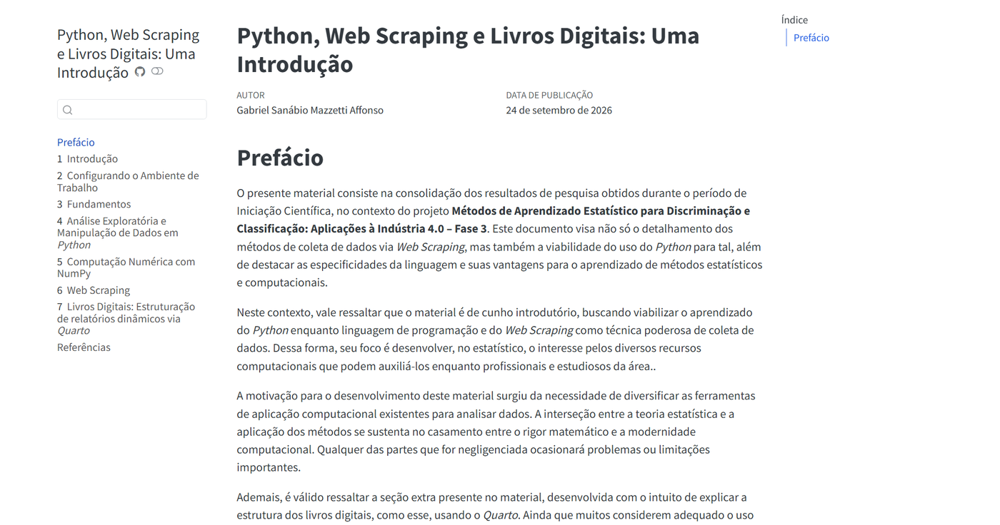
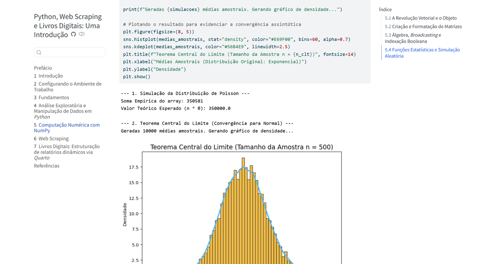

Estudo de caso · Produção técnica e computação estatística
Python para estatísticos
Concepção e autoria do livro digital Python, Web Scraping e Livros Digitais: Uma Introdução, desenvolvido em Quarto durante iniciação científica na UFJF para aproximar estudantes de Estatística do ecossistema científico em Python.
Pesquisa em aprendizado estatístico e publicação aberta
Este livro digital consolida resultados produzidos ao longo da minha iniciação científica na Universidade Federal de Juiz de Fora (UFJF), vinculada ao projeto de pesquisa Métodos de Aprendizado Estatístico para Discriminação e Classificação: Aplicações à Indústria 4.0 – Fase 3, com publicação em setembro de 2026.
Na formação em Estatística, é comum que o primeiro contato com programação ocorra em R, enquanto tarefas como coleta automatizada de dados na web e integração com bibliotecas generalistas demandam fluência em Python. O material surgiu para preencher essa ponte com vocabulário e exemplos familiares ao estudante de Estatística.
02 / Objetivo
Apresentar Python, manipulação de dados, computação numérica, web scraping e publicação reprodutível em Quarto por meio de aplicações estatísticas concretas.
Autoria integral do texto, exemplos de código e compilação
Dentro da linha temática definida no projeto de iniciação científica orientado na UFJF, fui responsável pela pesquisa técnica, planejamento pedagógico dos capítulos, escrita do texto, programação de todos os scripts e simulações em Python e publicação contínua do livro na web via GitHub Pages.
Dados e exploraçãoEstruturas do pandas, limpeza e tratamento (data wrangling), visualização gráfica e estudos de caso aplicados (Titanic e Iris).
Computação numéricaVetorização, álgebra matricial e broadcasting em NumPy, seguidos de simulações da distribuição de Poisson e do Teorema Central do Limite.
Coleta e reprodutibilidadeExtração estruturada de dados via web scraping em Python e um capítulo dedicado à construção de relatórios e livros dinâmicos em Quarto.
04 / Estrutura editorial e evidências visuais
Sete capítulos integrando teoria, código executável e resultados
O livro organiza a progressão em sete capítulos — da configuração do ambiente e sintaxe fundamental até manipulação tabular, computação vetorial, coleta de dados na web e editoração científica — mantendo o código-fonte exposto e reproduzível junto a cada gráfico e tabela gerada.

Página de abertura e prefácio do livro digital publicado via Quarto, apresentando a arquitetura completa dos 7 capítulos na barra lateral.

Capítulo 5 (Computação Numérica com NumPy): código em Python integrado à verificação empírica do Teorema Central do Limite (n = 500).
05 / Decisão técnica{ }
O próprio formato do livro como objeto de ensino
Publicação científica reprodutível
Adotar Quarto e documentar sua estrutura para o leitor
Em vez de distribuir notebooks isolados ou uma apostila estática em que código e figuras são copiados manualmente, estruturei todo o material como um projeto de livro no Quarto, onde cada bloco de Python é executado durante a renderização.
Além de evitar divergências entre código e saída estatística, incluí o Capítulo 7 especificamente para ensinar como estruturar livros digitais dinâmicos em Quarto — permitindo que outros estudantes repliquem o fluxo de publicação aberta.
Documentar métodos estatísticos de forma reprodutível é tão importante quanto implementar corretamente os algoritmos.
06 / Resultados
Material aberto na web
O livro digital encontra-se publicado gratuitamente no GitHub Pages, com busca integrada, navegação por seções, alternância de tema claro/escuro e código-fonte aberto no repositório do projeto.
Escrever um material introdutório voltado a estatísticos exigiu traduzir conceitos computacionais — como vetorização, broadcasting e requisições HTTP — em exemplos objetivos ligados à análise de dados e à simulação probabilística.
O processo também consolidou boas práticas de versionamento com Git, organização modular de capítulos em Quarto e publicação automatizada no GitHub Pages.
Síntese técnica
Competências demonstradas
Manipulação de dados e análise exploratória em Python com pandas.
Computação vetorial e simulação estatística de Monte Carlo com NumPy.
Coleta automatizada de informações na web por meio de web scraping.
Editoração técnica reprodutível com Quarto, Git e GitHub Pages.